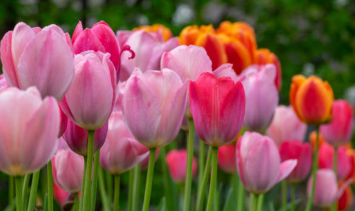
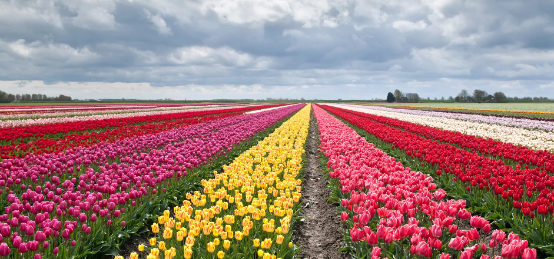

Historia de los tulipanes.
El tulipán es una tipo de planta que pertenece a la familia de las liliáceas. Son plantas bulbosas que por lo general cuentan con un tallo simple de 0.5 m y flores únicas de 6 pétalos. Por su gran belleza estos sean convertido en unas las flores ornamentales mas populares del mundo y han llegado a tener un gran peso en la economía de algunas naciones, como es el caso de los Países bajos.
El origen de los tulipanes se dio en los montes de Mongolia. Fue en este lugar donde fueron descubiertos y desde donde empezó su extensión junto al imperio de Genghis Khan. Esto cruzó fronteras hasta llegar a los montes turcos de Anatolia. De hecho, se dice que su nombre proviene de los turbantes turcos, conocidos como “thoulypen“. Después de que se introdujeron a Europa, su cultivo fue intervenido y mejorado. Esto sucedió principalmente en Holanda, país que hasta ahora se ha mantenido como el principal productor y exportador de tulipanes en el mundo.

Los tulipanes florecen en primavera y para que así sea, se deben plantar durante el otoño. Si se siembran antes de que la tierra se ponga fría y dura, se podrá lograr un buen crecimiento y una gran floración. Son al rededor de 24 variantes con 15 tonalidades diferentes. Es decir que podrás encontrar 10 variedades de color rojo, rosa y demás.
